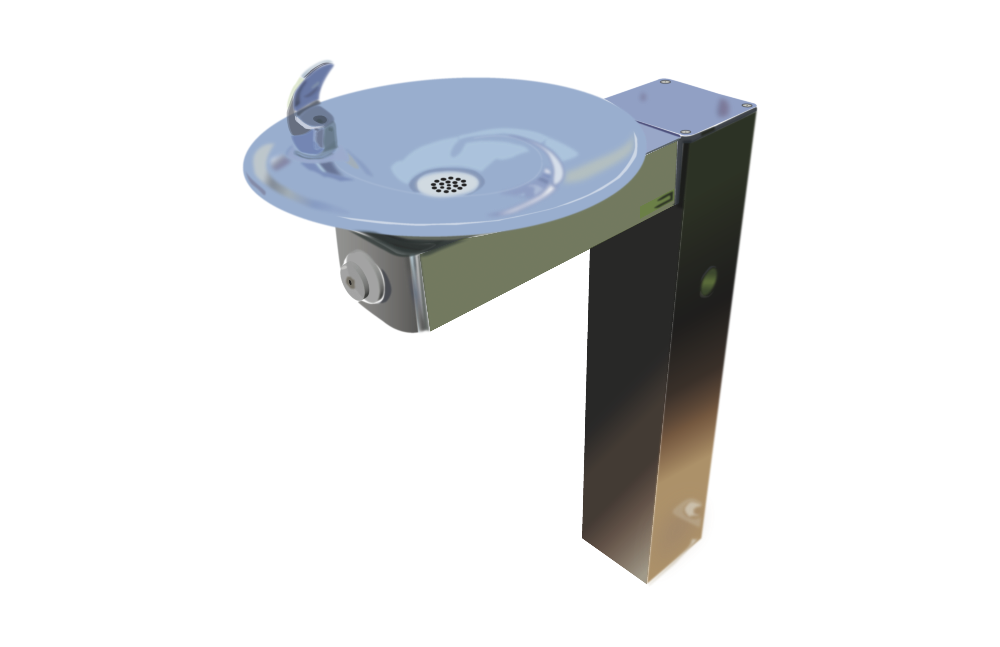

ILLUSTRATOR RENDERINGS
Vector renderings built from real photos in Adobe Illustrator, focused on light, reflection, and material.
TYPE
Vector Illustration • Rendering
TOOLS
Adobe Illustrator
FOCUS
Light • Reflection • Texture • Depth
OVERVIEW
For these pieces I recreated real photographs entirely as vector artwork. The water fountain study focuses on brushed metal and reflections, while the library scene works with warm hanging lights, shadows, and architectural depth. Each render is built from layered shapes and gradients so the final image reads like a photo while staying fully vector.
RENDERS
